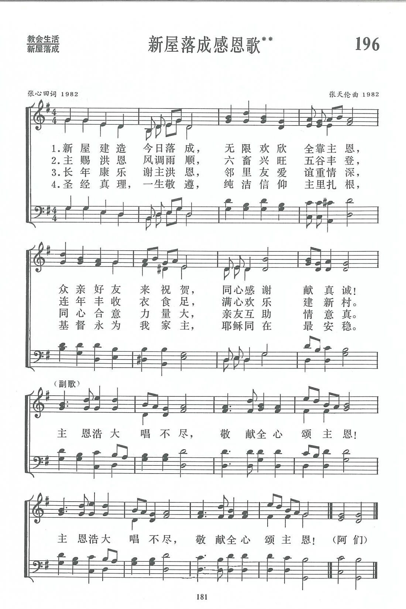

|
|
|
|
|
新编赞美诗196首 主恩浩大唱不尽 主赐洪恩风调雨顺 长年康乐谢主洪恩 圣经真理 一生敬遵 阿们 |
|
http://sooopu.com/html/?id=189873  |
|
|
|
|

新屋落成感恩歌新编赞美诗442首 https://youtu.be/lGZydymKTRU
第196首 新屋落成感恩歌** _张心田 A new building is completed
经文：“所以，凡听见我这话就去行的，好比一个聪明人，把房子盖在磐石上。雨淋，水冲，风吹，撞着那房子，房子总不倒塌，因为根基立在磐石上”(太7：24-25)。
我国农民素有数代同住一屋的传统。在衣、食、住、行这四项基本生活需要中，住的问题被看为极其重要，只要条件许可，便要翻造新屋，使全家人有安乐的住处。近年来，我国农村经济发展迅速，农民信徒造的新屋也如雨后春笋。信徒造屋后，首先想到的是感谢神恩。他们往往在新屋落成时，请教会里的牧师、传道或义工来家，举行一个感恩礼拜，并邀约亲友及其他信徒一同参加，藉此感谢主的深恩厚爱，同时也见证述说主的引领与看顾。
这首诗便是特别为这方面的需要而写的。
这首诗的作者是张心田牧师，(简历参阅第115首)。他曾长期在农村教会工作，因此他写的赞美诗既通俗而又充满生活气息。
这首诗的第一节及副歌，是描写农民信徒建成新屋后发自內心的感谢赞美。作者回忆他在农村教会中的见闻：原先居住在狭小破旧的平房中的信徒，造起了宽敞明亮的楼房，常是笑得合不拢嘴，怎能不欢唱主恩浩大，数算不尽!
作者深知，农民信徒要造新屋，或拆去旧房进行翻造，何等不易!这笔费用往往需要多年省吃俭用。年终的积累来自农作物的好收成，有时还要加上喂猪羊鸡鸭卖得的钱。这就必须有风调雨顺，六畜肥壮不害瘟，一家人个个身强力壮全力出工等条件，这一切都要归功于天父的保佑和恩惠。这是第二节歌词所反映的内容。
造新屋还需要有亲朋好友邻里鼎力相助。有时大家群策群力，半天就能把旧房拆去；然后整理地基，开沟夯三合土，木工立柱上梁，泥瓦工砌墙铺瓦，其他工人搬砖瓦、和灰砂、拌水泥等日以继夜努力操作，使新屋很快完成。在这个过程中，主内弟兄姊妹尤为赤胆忠心地全力协助，不但帮干各种活，有时还代购材料，代炊饮食，甚至在主人需要时解囊借助。第三节的词重现了这种种热烈的情景。
第四节是感恩者的心愿。新屋只是改善了外面的居住条件，更重要的是一家人要敬遵主道，尊基督为此家之主。才能真正享受耶稣同在的喜乐。
这又是一首父子合作写成的赞美诗。张心田写词后，嘱他的儿子张天伦谱一曲。张天伦1944年生，自幼受洗归主，1961年毕业于上海沪东造船厂技校，后又进业余大学学习。他原是沪东造船厂的车工，1987年任该厂技校教师。在教会内他也是一位中年义工，多年来参加唱诗班和协助青年工作。他平素喜爱音乐，担任厂业余乐队手风琴、小提琴伴奏，偶而也写曲、指挥。这是他第一次为赞美诗谱曲，写的曲调有民间风味，且简单易唱，富有活力。
世界各地的基督徒都有造新屋的，但专为新屋落成而写的感恩诗却极为少见。这首诗在反映中国信徒的信仰生活方面，很有它的特点。